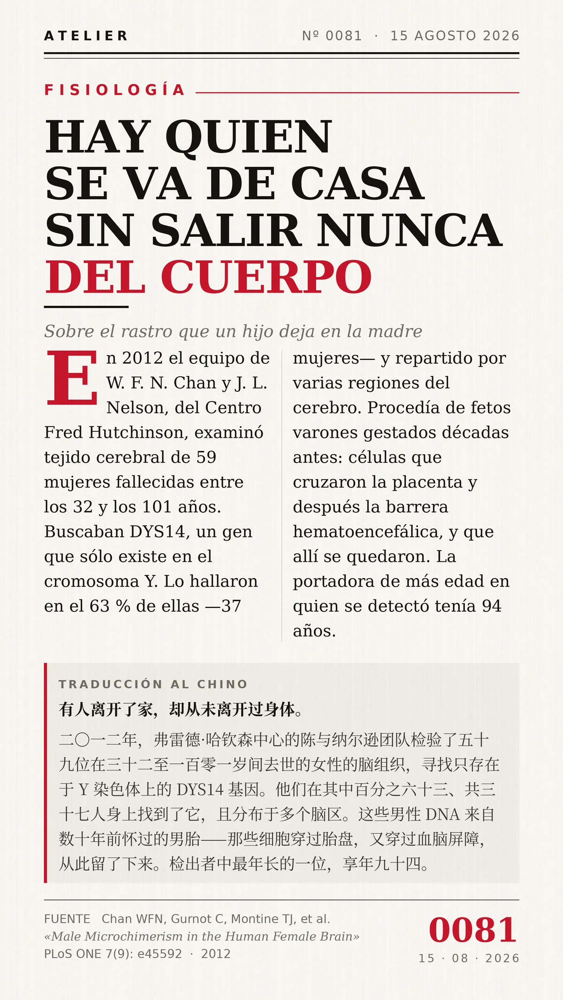

Hay quien se va de casa sin salir nunca del cuerpo.（有人离开了家，却从未离开过身体。）
En 2012 el equipo de W. F. N. Chan y J. L. Nelson, del Centro Fred Hutchinson, examinó tejido cerebral de 59 mujeres fallecidas entre los 32 y los 101 años, buscando DYS14, un gen que sólo existe en el cromosoma Y. Lo hallaron en el 63 % de ellas —37 mujeres— y repartido por varias regiones del cerebro. Procedía de fetos varones gestados décadas antes: células que cruzaron la placenta y después la barrera hematoencefálica, y que allí se quedaron. La portadora de más edad en quien se detectó tenía 94 años.（2012年，弗雷德·哈钦森中心的陈与纳尔逊团队检验了59位在32至101岁间去世的女性的脑组织，寻找只存在于Y染色体上的DYS14基因。他们在其中63%、共37人身上找到了它，且分布于多个脑区。这些男性DNA来自数十年前怀过的男胎——那些细胞穿过胎盘，又穿过血脑屏障，从此留了下来。检出者中最年长的一位，享年94。）
冷知识由执笔的模型自行查证。逐条断言、来源与所引原句存档在纯文字副本里，未经程序逐字校验，留作事后核实。